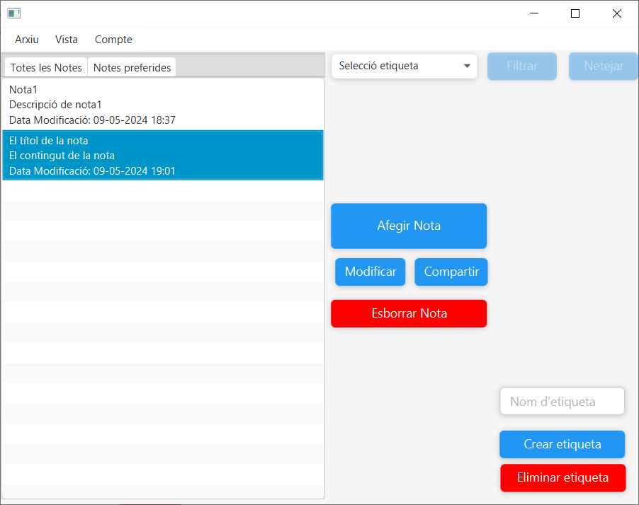

Manual bàsic d'ús de l'aplicació
L’aplicació consta de 4 pantalles: La pantalla de registre / inici de sessió, pantalla principal, pantalla d’edició i pantalla de compartir. Per poder accedir a totes les funcionalitats primer s’ha de crear un compte o iniciar sessió, per crear un compte a la pantalla de registre / inici de sessió s’ha d’escriure un nom d’usuari que ha de ser únic, per tant, no pot existir a la base de dades. També, el mateix passa amb el correu, a part de ser únic ha de ser vàlid i finalment una contrasenya de 8 o més caràcters.
Per iniciar sessió s’ha d’especificar un correu i contrasenya que coincideixin a la base de dades. Internament, les contrasenyes són emmagatzemades de forma encriptada per una major seguretat.
Un cop s’ha creat un compte o s’ha iniciat sessió s’obre la pantalla principal, des d’aquí es poden utilitzar moltes funcionalitats. Primer de tot ens enfoquem en el menú superior, a l’apartat d’arxiu l’usuari pot tancar l’aplicació, seguidament a l’apartat de vista es pot actualitzar la vista de les notes i recarregar de la base de dades les notes i etiquetes. Finalment, a l’apartat de compte es pot tancar sessió i tornar a la pantalla de registre o també eliminar el compte de forma permanent eliminant totes les seves notes i etiquetes vinculades.
Seguidament, a l’esquerra hi ha un apartat on s’afegiran les notes de l’usuari. Està separat en dues pestanyes, totes les notes i l’apartat on van les notes preferides.
Al centre de la pantalla hi ha una sèrie de botons, el primer sempre està actiu i permet crear noves notes, els altres botons s’activen quan hi ha una nota seleccionada, aquest són els botons de modificar, compartir i eliminar nota seleccionada.
A la cantonada dreta a baix de la pantalla hi ha un camp de text per escriure un nom d’etiqueta. Si es clica el botó de crear, s’afegirà l’etiqueta a l’aplicació i es podrà vincular a notes o es pot eliminar clicant el botó d’eliminar.
Quan es clica el botó d’afegir nota s’obre la pantalla d’edició de notes amb unes dades buides i si es clica a modificar s’obre la mateixa pantalla on totes les dades seran de la nota seleccionada. Ara ens enfoquem a la pantalla d’edició, els dos camps de text a l’esquerra són el títol i contingut, tenen una longitud màxima de 50 i 2048 caràcters respectivament. A la dreta hi ha un CheckBox que permet fer que la nota aparegui a l’apartat de notes preferides. També trobem un selector amb les etiquetes de l’usuari, quan es clica a vincular va a l’apartat de sota que mostra les etiquetes de la nota, això permetrà filtrar per notes a la pantalla principal, també hi ha un botó d’esborrar etiqueta on eliminarà de la nota l’etiqueta seleccionada a l’esquerra. Finalment, hi ha un botó per cancel·lar els canvis i un botó per guardar-los.
Un cop es guarden les dades, a la pantalla principal surt a l’esquerra la nota amb el títol, contingut i la data de modificació.
Ara es pot filtrar per etiqueta amb el selector de la dreta.

També, si es clica a la pestanya de notes preferides es mostren les que s’han marcat
Si cliquem a compartir amb una nota seleccionada, s’obre la pantalla de compartir. Aquesta pantalla té un camp de text que és un buscador d’usuaris per nom, quan es clica a buscar, a sota surten els usuaris coincidents amb el nom buscat total o parcialment.
Un cop se selecciona l’usuari desitjat, es pot clicar a compartir i li apareixerà la nota. Aquest usuari podrà editar lliurement la nota i inclús compartir-la amb altres usuaris. No obstant això, si un usuari està editant una nota i un altre usuari vol editar al mateix moment li sortirà un missatge informatiu dient que un altre usuari està editant la nota. Això es fa per evitar errors d’integritat.